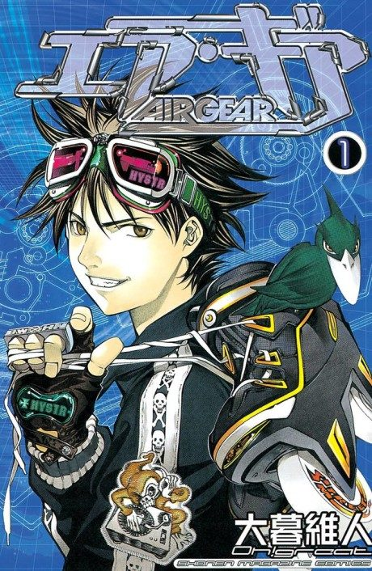

Animeter
 Anime
Anime
Manga2006 · Action, Comedy, Ecchi
Air Gear
エア・ギア
AniList7.0
Animeter—
Episodes25 ep
MangaNot checked
Watch order
In airing order. Episode numbers on this site count straight through every season, so season 2 starts at episode —.
1
2006 · TV
Air Gear
Episodes1–2525 ep
Films, OVAs and specials
Not counted in the episode numbers above.
·
2010 · OVA
AIR GEAR: Kuro no Hane to Nemuri no Mori - Break on the Sky
Sources: AniList